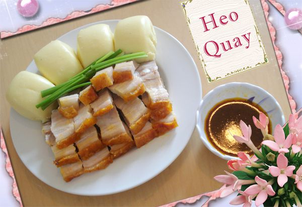

Bánh Bao Lạt Ăn Với Thịt Quay
 Nguyên liệu: - 300g bột mì nổi
- 100g đường xay nhuyễn
- 6 muỗng súp nước ấm
- 1 muỗng cà phê bột khoai
- 1 muỗng súp dầu ăn
- 2 muỗng súp nước chanh nguyên chất
Cách Làm:
Bước 1. Nước chanh để vào chén, bỏ bột khoai vào quậy cho tan
Bước 2. Đường để vào chén, cho nước ấm vào quậy cho tan đường
Bước 3. Rây bột mì vào thau, khoét 1 lổ ở giữa như trộn hồ cho nước đường, dầu, bột khoai đã hòa với nước chanh vào, trộn đều bột và nhồi cho kỹ khoảng 20 phút, bột không còn dính tay là được, đậy bằng khăn ẩm ủ bột độ 3 giờ
Bước 4. Cắt từng miếng bột vuông nhỏ tùy ý, lấy khuôn ấn tròn, xong để lên giấy cho vào xửng hấp. Khi hấp phải đợi nước thật sôi, xong để xửng lên hấp, như thế bánh mới nở tốt. Nước trong xửng hấp cũng phải cho dấm vào (2 lít nước trong và 5 muỗng súp dấm để bánh hấp được trắng. Hấp độ 5 phút, dở nắp xửng hấp ra, xả hơi 1 lần, hấp độ 15 phút bánh chín. Bánh chín đem ra để nguội, xong cho bánh vào xửng hấp lại lần thứ 2 độ 5 phút nửa cho hết mùi khai .